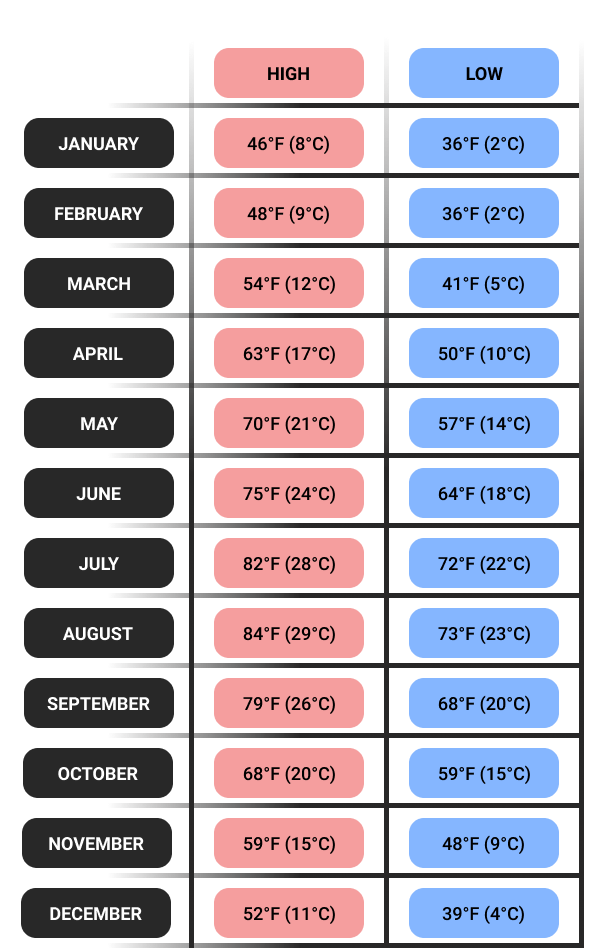

01
Tokyo
Travel Advice
Fusing the futuristic with the traditional, Tokyo is a sprawling megacity bursting with a seemingly limitless number of things to do.
A business and cultural megacenter that's home to tens of millions of people, Tokyo is also the crossroads where the Japanese interact with citizens from all over the world. The media love to focus on Harajuku's vibrant fashion, robot restaurants, maid cafes and the passionate uberfans known as otaku. As fast-paced as Tokyo’s innovation is, the metropolis is just as devoted to preserving tradition through its historical gardens, shrines and temples. Known for its extreme attention to detail, Japan's capital is home to some of the best Japanese food in the country, with 234 Michelin-starred restaurants—more than any other city. Whatever your cultural interests are, Tokyo is likely to have you covered. Home to many world-class art galleries and museums, staggeringly diverse nightlife options and cutting-edge technology, you'll never be stuck for things to do or places to go in Tokyo.
Tokyo Average Temperature by Month
Getting to Tokyo
From Narita International Airport
JR Narita Express
Direct, 60 minutes, around 3000 yen, 1-2 connections per hour
The most comfortable way of travel between Narita Airport and Tokyo Station is the JR Narita Express (NEX). The one way journey takes roughly one hour, costs around 3000 yen and is fully covered by the Japan Rail Pass, JR Tokyo Wide Area Pass and some other JR passes. There are departures every 30 to 60 minutes. The NEX Tokyo Round Trip Ticket for 4070 yen provides foreign travelers with a discounted round trip from the airport into Tokyo and back within a 2-week period.
JR Sobu Line
Direct, 90 minutes, 1340 yen, 1 connection per hour
The JR Sobu Line (Rapid Service) is the slower but cheaper JR alternative to the Narita Express. The one way trip takes roughly 90 minutes and costs 1340 yen. There is about one departure per hour.
1 transfer, 55 minutes, 2410-2680 yen, 2 connections per hour
Direct, 60 minutes, around 3000 yen, 1-2 connections per hour
Take the Keisei Skyliner from Narita Airport to Nippori Station (about 40 minutes, 2520 yen) and transfer to the JR Yamanote Line or JR Keihin-Tohoku Line to get to Tokyo Station (10 minutes, 160 yen). There are connections every 20-40 minutes. If purchased in advance online or via a travel agent outside of Japan, foreign tourists can ride the Skyliner for just 2250 yen.
Keisei Limited Express
1 transfer, 90 minutes, 1210 yen, 3 connections per hour
Take the Keisei Limited Express from Narita Airport to Nippori Station (about 75 minutes, 1050 yen) and transfer to the JR Yamanote Line or JR Keihin-Tohoku Line to get to Tokyo Station (10 minutes, 160 yen). There are connections every 20 minutes.
Limousine bus
Direct, 100 minutes, 2800 yen, 3-4 connections per hour
Limousine buses to Tokyo Station depart Narita Airport every 15 to 20 minutes. The one way journey takes about 100 minutes and costs 2800 yen. In addition, there are direct limousine bus connections to several major hotels in the Tokyo Station area. A special round trip ticket for only 4500 yen is available to foreign tourists exclusively.
Discount bus
Direct, 90 minutes, 1000 yen, frequent departures
"Airport Bus TYO-NRT" buses operate multiple times per hour between Narita Airport, Tokyo Station and Ginza Station. The one way fare is 1000 yen during the day and 2000 yen for late-night and early-morning departures.